(i) කේන්ද්රය P ද අරය 3 m ද වූ වෘත්තයකි.
(ii) ඔරලෝසුවේ කේන්ද්රය කේන්ද්රය ලෙස ද අරය 10 cm ද වූ වෘත්තයකි.
(iii) AB රේඛාවේ ලම්බ සමච්ඡේදකයයි.
(iv) මාර්ගයට සමාන්තරව, මාර්ගයේ සිට 20 cm ඉහළින් වූ සරල රේඛාවකි.
(v) AÔB කෝණයේ සමච්ඡේදකයයි.
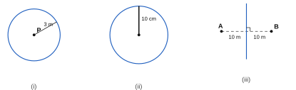
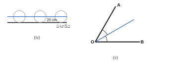
(ii) A හා B කේන්ද්ර ලෙස ගෙන, AB න් අඩකට වඩා වැඩි අරයකින් (උදා: 5.5 cm) AB හි දෙපසම චාප අඳින්න. ඡේදන ලක්ෂ්ය දෙක යා කරන්න → ලම්බ සමච්ඡේදකය.
(iii) A කේන්ද්රය ලෙස ගෙන අරය 5 cm න් චාප ඇඳ, ලම්බ සමච්ඡේදකය ඡේදනය වන C1 හා C2 ලකුණු කරන්න.
(iv) BC1 = 5 cm (ලම්බ සමච්ඡේදකය මත ඕනෑම ලක්ෂ්යයක් A හා B ට සම දුරින් පිහිටයි).
C1 සිට AB ට දුර = 3 cm.
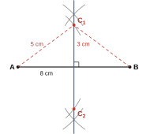
P සිට 6 m දුරින් ඇති ලක්ෂ්යවල පථය: කේන්ද්රය P, අරය 6 cm වූ වෘත්තය. Q සිට 8 m දුරින් ඇති ලක්ෂ්යවල පථය: කේන්ද්රය Q, අරය 8 cm වූ වෘත්තය.
(ii) වෘත්ත දෙක T1 හා T2 හිදී හමු වේ → කරාමය සවි කළ හැකි ස්ථාන දෙකක් ඇත.
(iii) PT1Q = 90°.
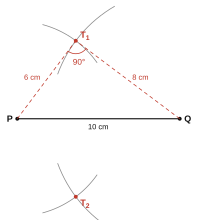
(ii) PQ ට දෙපසින්, 2 cm (10 m) දුරින් ඇති PQ ට සමාන්තර සරල රේඛා දෙක.
(iii) PQ හි ලම්බ සමච්ඡේදකය.
(iv) පථ T1 හා T2 හිදී හමු වේ → ස්ථාන දෙකක්.
(v) PT1 ≈ 5.4 cm → සත්ය දුර ≈ 5.4 × 5 = 27 m.
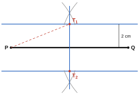
(i) PQ සිට 8 m දුරින් ඇති පථය (ඉඩම තුළ): PQ ට සමාන්තරව 8 m දුරින් ඇති රේඛාව. PS සිට 5 m දුරින් ඇති පථය: PS ට සමාන්තරව 5 m දුරින් ඇති රේඛාව.
(ii) මෙම රේඛා දෙක හමු වන ලක්ෂ්ය T වේ.
(iii) T සිට SR ට 12 m (20 − 8) ද QR ට 25 m (30 − 5) ද වේ.
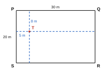
(ii) P කේන්ද්රය ලෙස ගෙන P හි දෙපසින් AB ඡේදනය වන සේ චාප අඳින්න. එම ලක්ෂ්ය දෙක කේන්ද්ර ලෙස ගෙන සමාන, විශාල අරයකින් AB ට ඉහළින් ඡේදනය වන චාප අඳින්න. එම ලක්ෂ්ය P ට යා කරන්න.
(iv) AQ = 5 cm.
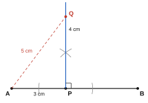
(ii) Y කේන්ද්රය ලෙස ගෙන XZ ලක්ෂ්ය දෙකකදී ඡේදනය වන සේ චාපයක් අඳින්න. එම ලක්ෂ්ය කේන්ද්ර ලෙස ගෙන සමාන අරයකින් XZ හි අනෙක් පැත්තේ ඡේදනය වන චාප අඳින්න. Y එම ලක්ෂ්යයට යා කරන්න; එය XZ හමු වන ලක්ෂ්ය D වේ.
(iii) XD = ZD ≈ 4.3 cm, YD = 2.5 cm. (XY = YZ නිසා D යනු XZ හි මධ්ය ලක්ෂ්යයි.)
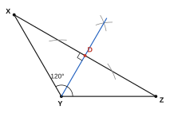
(ii) P හි 60° නිර්මාණය: P කේන්ද්රය ලෙස ගෙන PQ ඡේදනය වන සේ චාපයක් අඳින්න; එම ලක්ෂ්ය කේන්ද්රය ලෙස ගෙන එම අරයෙන්ම චාපය නැවත ඡේදනය කරන්න; P එම ලක්ෂ්යයට යා කරන්න. Q හි ද එලෙසම කරන්න.
(iii) PR = QR = 8 cm → PQR සමපාද ත්රිකෝණයකි.
(v) QS = 4 cm හා PŜQ = 90°.
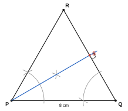
(i) A හි AB ට ලම්බකය (90°) නිර්මාණය කර, එම සෘජු කෝණය සමච්ඡේදනය කරන්න → 45°.
(ii) 60° නිර්මාණය කරන්න; එය සමච්ඡේදනය කරන්න → 30°; 30° කෝණය සමච්ඡේදනය කරන්න → 15°.
(iii) එකම ලක්ෂ්යයේ, එකම බාහුව මත 90° හා 60° නිර්මාණය කර, ඒවා අතර කෝණය සමච්ඡේදනය කරන්න → 75° (= 60° + 15°).
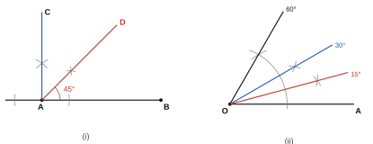
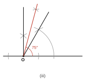
P හි 30°: 60° නිර්මාණය කර සමච්ඡේදනය කරන්න. Q හි 45°: 90° නිර්මාණය කර සමච්ඡේදනය කරන්න.
(iv) PR̂Q = 105° (180° − 30° − 45°), PR ≈ 5.1 cm, QR ≈ 3.6 cm.
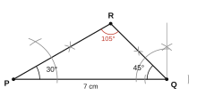
(ii) L කේන්ද්රය ලෙස ගෙන LM හා LK ඡේදනය වන සේ චාපයක් අඳින්න. M කේන්ද්රය ලෙස ගෙන එම අරයෙන්ම ML ඡේදනය වන සේ චාපයක් අඳින්න. L කෝණය මත කැපුණු ජ්යායේ දිග කවකටුවට ගෙන, ML සිට නව චාපය මත එම දිගම ලකුණු කරන්න. M එම ලක්ෂ්යයට යා කර දික් කරන්න → MN.
(iii) PL = PM (උදා: කෝණය 50° නම්, PL = PM ≈ 4.7 cm).
(iv) පාදමේ කෝණ සමාන නිසා PLM සමද්විපාද ත්රිකෝණයකි.
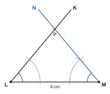
(iii) O කේන්ද්රය ලෙස ගෙන AB ලක්ෂ්ය දෙකකදී ඡේදනය වන සේ චාපයක් අඳින්න; එම ලක්ෂ්ය කේන්ද්ර ලෙස ගෙන සමාන අරයකින් AB හි අනෙක් පැත්තේ ඡේදනය වන චාප අඳින්න; O එම ලක්ෂ්යයට යා කරන්න.
(iv) AN = BN = 3 cm, ON ≈ 2.6 cm.
නිරීක්ෂණය: කේන්ද්රයේ සිට ජ්යායකට අඳින ලම්බකය ජ්යාය සමච්ඡේදනය කරයි.
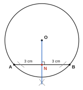
(ii) AB ට දෙපසින් 4 m දුරින්, AB ට සමාන්තර වූ, දිග 10 m බැගින් වූ සරල රේඛා දෙකක් සහ කේන්ද්ර A හා B ද අරය 4 m ද වූ අර්ධ වෘත්ත දෙකකින් සැදී ඇත.
(iii) වර්ගඵලය = සෘජුකෝණාස්රය + අර්ධ වෘත්ත දෙක = 10 × 8 + 22/7 × 4 × 4 = 80 + 50.29 = 130.29 m2
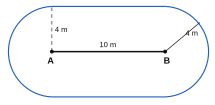